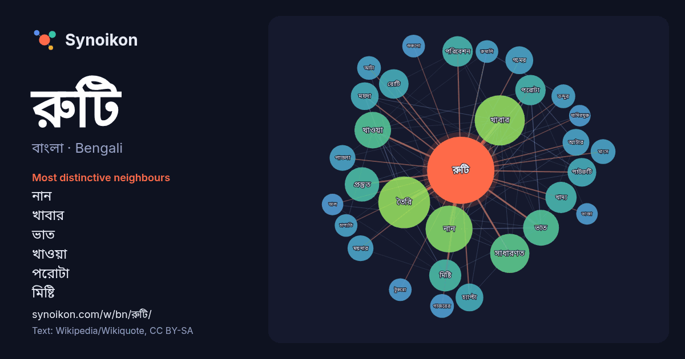

বাংলা · Bengali · word of the day list
রুটি
“bread” · The words found around it in 713 instances from Bengali Wikipedia, Wikiquote.

Most distinctive neighbours
- নান 42×
- খাবার 31×
- ভাত 24×
- খাওয়া 22×
- পরোটা 19×
- মিষ্টি 18×
- রোটি 18×
- পাউরুটি 17×
- প্রস্তুত 16×
- গমের 15×
- চ্যাপ্টা 15×
- ময়দা 15×
- আটার 15×
- ময়দার 13×
- পরিবেশন 13×
- খাদ্য 12×
- পাতলা 12×
- তন্দুর 12×
- গাজরের 12×
- আটা 12×
× = how many times more often than in general Bengali Wikipedia text.
Most frequent neighbours
- তৈরি 52
- খাবার 49
- নান 43
- সাধারণত 30
- ভারতীয় 28
- খাওয়া 26
- ভাত 25
- ধরনের 24
- প্রস্তুত 23
- পরিচিত 21
- মিষ্টি 20
- খাদ্য 19
- জনপ্রিয় 19
- পরিবেশন 18
- পরোটা 18
- রোটি 17
- পাউরুটি 16
- গমের 15
- চ্যাপ্টা 15
- ময়দা 15
In context
- রুটি, চাপাতি, পরোটা, পাঁপড়, ধোসা ইত্যাদি উল্লেখযোগ্য, আর বাংলায় "রুটি" বলতে প্রায়ই আটার রুটি বা চাপাতিকে বোঝায়। ইউরোপীয় শৈলীতে তৈরি করা রুটিকে পাউরুটি Wikipedia snippets · রুটি
- নান রুটি এক ধরনের ওভেনে পাকানো রুটি যা দক্ষিণ এশিয়ার দেশগুলোর একটি জনপ্রিয় খাদ্য। মূলত পৃথিবীর বিভিন্ন অঞ্চলে সমান রুটির সাধারণ নাম হল নান। ভারতীয় Wikipedia snippets · নান রুটি
- (রুটি) এবং আরও জনপ্রিয় স্ট্রিট ফুড আইটেমকে বোঝাতে পারে, যেখানে রুটিকে একটি মোড়কের আকারে পূরণ করা লোভনীয় চারপাশে ভাঁজ করা হয়। রুটি মোড়ানো হ'ল রুটি Wikipedia snippets · আটার রুটি
- বর্বরি রুটি (ফার্সি: نان بربری, প্রতিবর্ণীকৃত: নান-এ বার্বারি) হল এক ধরনের খামিরযুক্ত ইরানি বড় রুটি। এটি একটি মোটা বড় রুটি ও সাধারণত তিল বা কালো ক্যারাওয়ে Wikipedia snippets · বর্বরি রুটি
- ঢাকাতেও কালাই রুটি জনপ্রিয় হয়ে উঠছে। প্রথমে মাষকালাই ও আতপ চাল পাটাতে বা যাঁতাতে পিষে আটা বানানো হয়। মেশিনে তৈরী আটা দিয়েও কালাই রুটি বানানো গেলেও Wikipedia snippets · কালাই রুটি
- কাক রুটি ( ফার্সি : کاک ) কাক এক ধরণের রুটি এবং বেলুচ এবং পশতুন জনগণের একটি স্থানীয় খাবার। যাযাবরদের মধ্যে জনপ্রিয় খাবার কাক রুটি। এই রুটি বা পাউরুটি Wikipedia snippets · কাক (রুটি)
- রুমালি রুটি একধরনের পাতলা রুটি যার উৎপত্তি ভারতীয় উপমহাদেশে এবং বাংলাদেশ, ভারত ও পাকিস্তানের জনপ্রিয় একটি খাবার। এটা তন্দুরি খাবারের সংগে খাওয়া হয়। Wikipedia snippets · রুমালি রুটি
- বাকার রুটি শব্দটি সাধারণত ইন্দোনেশিয়ান এবং মালয় উভয় ভাষাতেই বর্তমান। এই শব্দটির মাধ্যমে সাধারণত সেঁকা রুটি বা টোস্টকে বোঝায়। এটি সাধারণত গ্রিল বা Wikipedia snippets · বাকার রুটি
More Bengali words
- অরণ্য
- আয়না
- ইতিহাস
- ঈশ্বর
- কাজ
- কুকুর
- ক্ষমতা
- খাদ্য
- গান
- গ্রীষ্ম
- ঘড়ি
- ঘণ্টা
- ঘোড়া
- ছায়া
- জননী
- জলবায়ু
- জীবন
- ঝড়
- টাকা
- ট্রেন
- দারুচিনি
- দ্বীপ
- নক্ষত্র
- নীরবতা
- পরিবার
- পানি
- পাহাড়
- প্রকৃতি
- বাগান
- বিজ্ঞান
- বিড়াল
- বৃষ্টি
- ভাষা
- মধু
- মরুভূমি
- মানচিত্র
- মৃত্যু
- রাস্তা
- লবণ
- শরৎ
- শহর
- শিল্প
- শীত
- সত্য
- সময়
- সেতু
- সোনা
- স্বাস্থ্য
- হৃদয়
Precomputed on 2026-10-09 with default settings (±5 words, medium corpus). The interactive map can refresh it with live data.